To benchmark GTAW code, we use it to calculate the continua and gap modes of
the Solovev equilibrium and compare the results with those given by NOVA code.
The Solovev equilibrium used in the benchmark case is given by
with  ,
,
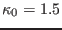, , and
. The flux surface with the minor
radius being (corresponding to
) is
chosen as the boundary flux surface. Main plasma is taken to be Deuterium and
the number density is taken to be uniform with
. Figure 3 compares the Alfven continua calculated by NOVA and
GTAW, which shows good agreement between them.
,
,
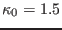, , and
. The flux surface with the minor
radius being (corresponding to
) is
chosen as the boundary flux surface. Main plasma is taken to be Deuterium and
the number density is taken to be uniform with
. Figure 3 compares the Alfven continua calculated by NOVA and
GTAW, which shows good agreement between them.
Figure 3:
Comparison of the 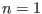 Alfven continua calculated
by NOVA and our code. The continua are calculated in the slow sound
approximation[7] and the equilibrium used is the Solovev
equilibrium given in Eqs. (258) and (259).
|
A gap mode with frequency
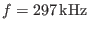 is found in the NAE gap by
both NOVA and GTAW. The poloidal mode numbers of the two dominant harmonics
are  and 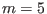, which is consistent with the fact that a NAE is
formed due to the coupling between
and 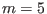, which is consistent with the fact that a NAE is
formed due to the coupling between  and 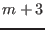 harmonics. Before comparing
the radial structure of the poloidal harmonics given by the two codes, a
discussion about the assumption adopted in NOVA is desirable. As is pointed
out by Dr. Gorelenkov, NOVA at present is restricted to up-down symmetric
equilibrium and, for this case, it can be shown that the amplitude of all the
radial displacement can be transformed to real numbers. For this reason, NOVA
use directly real numbers for the radial displacement in its calculation. In
GTAW code, the amplitude of the poloidal harmonics of the radial displacement
are complex numbers. The Solovev equilibrium used here is up-down symmetric
and the results given by GTAW indicate the poloidal harmonics of the radial
displacement can be transformed (by multiplying a constant such as )
to real numbers. After transforming the radial displacement to real numbers,
the results can be compared with those of NOVA. Figure 4 compares
the radial structure of the dominant poloidal harmonics
given by the two codes, which indicates the results given by the two codes
agree with each other well.
and 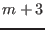 harmonics. Before comparing
the radial structure of the poloidal harmonics given by the two codes, a
discussion about the assumption adopted in NOVA is desirable. As is pointed
out by Dr. Gorelenkov, NOVA at present is restricted to up-down symmetric
equilibrium and, for this case, it can be shown that the amplitude of all the
radial displacement can be transformed to real numbers. For this reason, NOVA
use directly real numbers for the radial displacement in its calculation. In
GTAW code, the amplitude of the poloidal harmonics of the radial displacement
are complex numbers. The Solovev equilibrium used here is up-down symmetric
and the results given by GTAW indicate the poloidal harmonics of the radial
displacement can be transformed (by multiplying a constant such as )
to real numbers. After transforming the radial displacement to real numbers,
the results can be compared with those of NOVA. Figure 4 compares
the radial structure of the dominant poloidal harmonics
given by the two codes, which indicates the results given by the two codes
agree with each other well.
Figure 4:
The dominant poloidal harmonics (
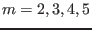)
of a NAE as a function of the radial coordinate. The solid lines are
the results of GTAW while the dashed lines are those of NOVA. The
corresponding poloidal mode numbers are indicated in the figure. The
frequency of the mode
. The equilibrium is given by Eqs.
(258) and (259).
| 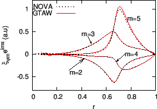 |
Figure 5:
Slow sound approximation of the continua of the Solovev
equilibrium given by Eqs. (258) and (259). Also plotted
are the frequency of the NAE (
) and the and continua in cylindrical limit.
|
Figure 6 plots the mode structure of the NAE on plane,
which shows that the mode has an anti-ballooning structure, i.e., the mode is
stronger at the high-field side than at the low-field side.
Figure 6:
Two dimension mode structure of the NAE in Fig.
4. The dashed line in the figure indicates the boundary
magnetic surface and the small circle indicates the inner boundary used in
the numerical calculation.
|
Figure 7:
Real part (a), imaginary part (b), and absolute value of the
amplitude (c) of the poloidal harmonics of a TAE as a function of
the radial coordinate. The frequency of the mode is
. The
dominant poloidal harmonics are those with 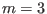 and  . The
equilibrium is given by Eqs. (258) and (259).
. The
equilibrium is given by Eqs. (258) and (259).
|
Figure 8:
Slow sound approximation of the continua of the Solovev
equilibrium. Also plotted are the frequency of the TAE (
)
and the and continua in cylindrical limit. Toroidal mode
number .
|
For the case that
, a TAE with
is found in the TAE gap. The radial dependence of the poloidal
harmonics of the mode is plotted in Fig. 9. Figure 10
plots the frequency of the mode on the Alfven continua graphic.
Figure 9:
Real part (a), imaginary part (b), and absolute value
of the amplitude (c) of the poloidal harmonics of a TAE as a
function of the radial coordinate. The frequency of the mode is
. The dominant poloidal harmonics are those with and . The equilibrium is given by Eqs. (258) and (259),
(old)
|
Figure 10:
Slow sound approximation of the continua of the
Solovev equilibrium. Also plotted are the frequency of the TAE (
) and the and continua in cylindrical limit.
Toroidal mode number .(old)
|
yj
2015-09-04